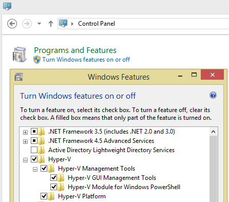

Using Vagrant on Windows
Vagrant is a virtualization technology for creating development environments. It is based on virtual machine technology and can be used with multiple VM providers. Not surprisingly, for a technology rised up from Linux ecosystem, even if it claims to be cross-platform, setting it up on Windows won't be easy. This article documents the steps to use Vagrant on Windows, the issues found, and the way to address them.
Before started, make sure Hyper-V is enabled on the machine. This can be done via "Add/Remove features" dialog in Control Panel. Don't forget to enable the Hyper-V PowerShell tools - Vagrant needs it to work against the Hyper-V provider. Why using Hyper-V rather than VirtualBox, etc.? Hyper-V comes standard with all Windows versions after 8.1. It might be the most feature rich and efficient Virtual Machine technology on Windows - it powers Windows Azure!

The getting started guide is here. Use vagrant init <boxname> to initialize one. But not all "boxes" supports all providers. The default one in the getting started doc hashicorp/precise32, for example, does not support hyper-v. But all the boxes can be explored here. And it doesn't take long to realize that hashicorp/precise64 supports hyper-v. Once initialized, use valgrant up to download and set up the virtual machine.
valgrant init hashicorp/precise64
valgrant up --provider hyperv
Once done, use valgrant ssh to log in to it. It uses ssh to log in. So make sure ssh is on PATH. If git is installed, it usually comes with a set of unix commands including ssh. So to bring ssh onto PATH in PowerShell:
PS> $env:path += ";C:\Program Files\Git\bin"
In cmd.exe use
SET PATH=%PATH%;C:\Program Files\Git\bin
With that done, you can log in and (finally!) be greeted with the Linux command line:
PS> vagrant ssh
Welcome to Ubuntu 12.04.4 LTS (GNU/Linux 3.11.0-15-generic x86_64)
* Documentation: https://help.ubuntu.com/
Last login: Thu Mar 6 09:02:28 2014
vagrant@precise64:~$
vagrant@precise64:~$ uname -a
Linux precise64 3.11.0-15-generic #25~precise1-Ubuntu SMP Thu Jan 30 17:39:31 UTC 2014 x86_64 x86_64 x86_64 GNU/Linux
#References